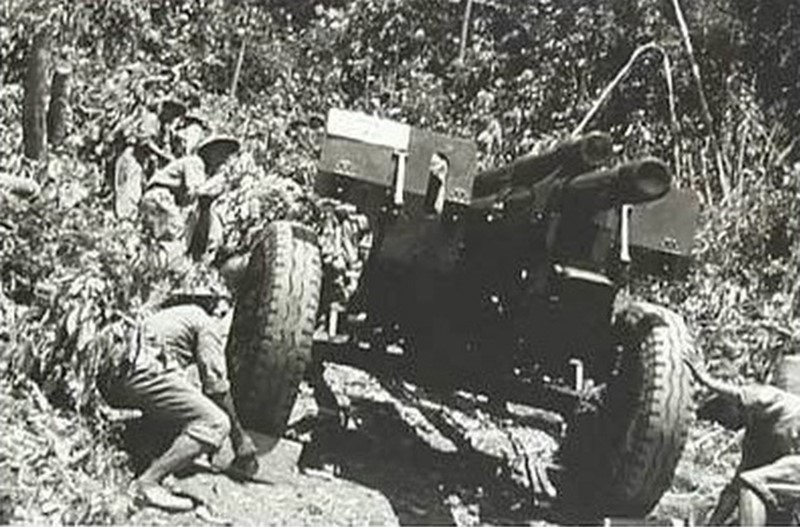

THCS TRƯNG VƯƠNG
Biểu tượng của sức mạnh đoàn kết toàn dân
Trong những ngày này, khi lễ kỷ niệm 70 năm Chiến thắng Điện Biên Phủ đang tới gần, trả lời báo chí, ông Pedro de Oliveira, Tổng thư ký Hội Hữu nghị Brazil-Việt Nam cho rằng: “Chiến thắng Điện Biên Phủ là sự hội tụ của nhiều yếu tố, trong đó phải kể đến vai trò lãnh đạo của Đảng, mà trực tiếp là tầm nhìn, nhãn quan chiến lược tuyệt vời của Chủ tịch Hồ Chí Minh và vai trò chỉ huy chiến dịch của Đại tướng Võ Nguyên Giáp”.
Là một người có nhiều năm nghiên cứu về lịch sử Việt Nam, ông Oliveira nhấn mạnh, đấu tranh kháng chiến phải tính đến thế mạnh, thời cơ, điều kiện địa hình, khí hậu và sự đoàn kết của toàn dân. Chủ tịch Hồ Chí Minh quan niệm cuộc kháng chiến chống thực dân Pháp là cuộc đấu tranh vũ trang với sự tham gia của toàn thể nhân dân bị áp bức. Yếu tố đoàn kết toàn dân dưới thời đại Hồ Chí Minh cơ bản do lòng yêu nước, truyền thống đấu tranh chống giặc ngoại xâm, ý thức chính trị và tổ chức đã trở thành bức tường thép thực sự của dân tộc Việt Nam chống lại kẻ thù... Với dân tộc Việt Nam, độc lập là mục tiêu cao cả, là giá trị tinh thần quý nhất, là sự thể hiện tập trung của chủ nghĩa yêu nước và ý chí tự lực, tự cường Việt Nam. Chủ tịch Hồ Chí Minh là tiêu biểu cho ý chí đó.

Đề cập đến sức mạnh toàn dân hội tụ dưới biểu tượng Hồ Chí Minh, GS Rob Hurle, Đại học Quốc gia Australia trong bài “Hồ Chí Minh và việc sử dụng biểu tượng để vận động nhân dân Việt Bắc-công tác tuyên truyền mở đầu cho Điện Biên Phủ” có phân tích, cuộc kháng chiến trường kỳ chống thực dân Pháp đã kết thúc bằng thắng lợi của Việt Minh trong trận Điện Biên Phủ, đa số người dân Việt Nam tham gia chiến đấu một cách trực tiếp, không thì cũng là người phục vụ chiến trường. Việc xây dựng, sửa chữa hệ thống đường giao thông chi viện cho Việt Minh tại Điện Biên ước tính phải đến hàng vạn người, mà phần lớn công việc được thực hiện thủ công, bằng phương tiện xe đạp hoặc gồng gánh, bao gồm cả nam lẫn nữ... Những nhà nghiên cứu hay tướng lĩnh quân đội Pháp trực tiếp tham chiến tại Điện Biên Phủ đã nhận ra được sức mạnh đoàn kết vô song của nhân dân Việt Nam dưới sự lãnh đạo của lãnh tụ Hồ Chí Minh.
Cũng dành nhiều thời gian nghiên cứu về quân sự Việt Nam, tác giả K.Tenyhen trong quyển “Chiến tranh cách mạng của cộng sản”, New York, 1963 chỉ ra: “Về quan điểm quân sự của Việt Nam, những chiến thuật của cuộc chiến tranh nhân dân chú trọng đặc biệt tới tính cơ động, vận động nhanh vào ban đêm, tiến công ồ ạt nhưng nhanh chóng, rút nhanh khỏi những trận đánh mà kết quả không chắc chắn. Các chiến thuật này được thực hiện một cách xuất sắc, thường xuyên, bởi một quân đội gồm những sĩ quan và binh lính tận tụy, gan dạ. Họ sống chung với nhau một hoàn cảnh, cùng chịu đựng và chia sẻ với nhau những gian khó. Nhìn bề ngoài khó phân biệt binh lính với sĩ quan, họ thật sự chung sức với nhau một lý tưởng”.
Người Việt Nam bấy giờ có chung một lý tưởng, mục tiêu hướng đến là đánh đuổi quân xâm lược, giành lại độc lập, tự do cho dân tộc. Lý tưởng đó cũng được xây đắp nên từ sức mạnh của tinh thần yêu nước thương nòi được chính Chủ tịch Hồ Chí Minh truyền cảm hứng.
"Xin ngả mũ chào Tướng Giáp"
Nhắc đến Chiến thắng Điện Biên Phủ, trên toàn cầu người ta nghĩ ngay đến Đại tướng Võ Nguyên Giáp, người học trò xuất sắc của Chủ tịch Hồ Chí Minh. Đại tướng Võ Nguyên Giáp vinh dự được Bác Hồ giao trọng trách Tổng Tư lệnh Chiến dịch Điện Biên Phủ. Trước lúc Đại tướng lên đường thực hiện nhiệm vụ, Bác Hồ dặn dò: “Tổng Tư lệnh ra mặt trận. Tướng quân tại ngoại. Trao cho chú toàn quyền quyết định. Trận này quan trọng, phải đánh cho thắng! Chắc thắng mới đánh, không chắc thắng không đánh”.
Trong Chiến dịch Điện Biên Phủ và có lẽ là trong suốt cuộc đời cầm quân của Đại tướng Võ Nguyên Giáp, thay đổi phương châm tác chiến từ “đánh nhanh, giải quyết nhanh” sang “đánh chắc, tiến chắc” là “quyết định khó khăn nhất” của ông. Đây được coi là sự kiện kịch tính nhất trong lịch sử cuộc kháng chiến chống thực dân Pháp. Quyết định đó thể hiện tư duy quân sự sắc sảo, bản lĩnh của người cầm quân; nhưng đồng thời cũng là biểu hiện của sự thấm nhuần tư tưởng Hồ Chí Minh về quân sự, thể hiện tính nhân văn của một vị tướng “dĩ công vi thượng”, luôn biết đề cao vai trò của tập thể, hết sức tôn trọng ý kiến của tập thể vì lợi ích chung.
Chiến thắng Điện Biên Phủ năm 1954 dưới sự chỉ huy tài tình của Đại tướng Võ Nguyên Giáp đã nhận được sự tôn trọng, khâm phục của nhiều chính khách quốc tế, trong đó có cả những người ở "phía bên kia chiến tuyến".
Nhân dịp Đại tướng Võ Nguyên Giáp tròn 100 tuổi (25-8-1911 / 25-8-2011), Tổng thống Venezuela Hugo Chávez đã gửi thư chúc thọ Đại tướng. Trong thư, Tổng thống Hugo Chávez bày tỏ lòng khâm phục, ngưỡng mộ Đại tướng: “Thưa Tướng quân, ngay từ khi còn là một quân nhân cách mạng trẻ, tôi đã nhận ra tấm gương sáng ngời ở Đại tướng... Trước đây cũng như bây giờ, vị Tổng chỉ huy Chiến dịch Điện Biên Phủ và cuộc chiến tranh ở Việt Nam, trước tiên là chống thực dân Pháp và sau đó là đánh đế quốc Mỹ trở nên vĩ đại như một chiến lược gia và nhà cầm quân đại tài, như một nhà thông thái trong bố trí hậu cần và điều binh, đưa nhân dân Việt Nam anh em đi từ thắng lợi này đến thắng lợi khác, tiến tới giành độc lập hoàn toàn”.
Còn với Tướng De Castries, người trực tiếp chỉ huy quân đội đối đầu với Đại tướng Võ Nguyên Giáp trong Chiến dịch Điện Biên Phủ đã được Tạp chí Paris Match số 268, tháng 5-1954 (số đặc biệt) chạy tít lớn: "Le calvaire et la gloire du general de Castries et de ceux de Dien Bien Phu" (tạm dịch: Điện Biên Phủ-nỗi đau và vinh quang của Tướng De Castries). Sau này mỗi khi nhắc tới Điện Biên Phủ, De Castries không giấu sự thán phục tài cầm quân của Đại tướng Võ Nguyên Giáp, ông khẳng định: “Tướng Giáp là một người thông minh, dũng cảm; một người giỏi chỉ huy du kích. Ông ấy cũng giỏi về chính trị, về chủ nghĩa cộng sản. Chúng tôi đã thấy rõ điều đó. Qua trận Điện Biên Phủ, tôi thấy Tướng Giáp không những giỏi về chỉ huy đánh du kích mà còn giỏi cả về chỉ huy trận địa chiến, chỉ huy tác chiến hiệp đồng binh chủng và cả về nghi binh đánh lừa tình báo đối phương. Ông chỉ huy những chiến dịch tưởng chừng không thể thắng, đưa ra những quyết định mà có lẽ không một vị tướng nào dám thực hiện. Đặc biệt, Tướng Giáp rất giỏi khi tổ chức, bố trí những trận đánh du kích lấy ít địch nhiều”.
De Castries thành thực: “Tôi thừa nhận Tướng Giáp rất sành sỏi binh nghiệp và khôn ngoan hơn, tài giỏi hơn tôi đã đành, mà còn hơn cả Tướng Cogny và Tướng Navarre. Tôi hân hạnh được làm đối thủ của Tướng Giáp, được làm kẻ chiến bại trực tiếp của một người tài giỏi như Tướng Giáp. Tôi ngưỡng mộ và kính phục ông. Ông Giáp đã lãnh đạo quân đội nước Việt Nam giành được chiến thắng trong một thời hạn thật đặc biệt kéo dài suốt 30 năm, đó là một kỳ tích chưa từng thấy!”.
Còn Tướng Marcel Bigeard, một sĩ quan dù dày dạn chinh chiến, từng tham gia chỉ huy quân đội Pháp trong trận Điện Biên Phủ, sau đó tiếp tục chiến đấu trên nhiều chiến trường tại châu Phi cũng bày tỏ sự ngưỡng mộ, kính phục đối với Đại tướng Võ Nguyên Giáp. Trong cuốn hồi ký “Pour une parcelle de gloire” (Vì chút đỉnh vinh quang), Tướng Bigeard đánh giá: “Đôi khi ông Giáp đã thua điểm, thậm chí đo ván. Nhưng ông luôn rút ra bài học, giành lại ưu thế để đến chung cuộc trở thành một tướng lĩnh không ai bì kịp. Sau này, ông đã sử dụng những thay đổi từ bài học đó để giành thắng lợi trong cuộc chiến với người Pháp, người Mỹ. Xin ngả mũ chào Tướng Giáp”.